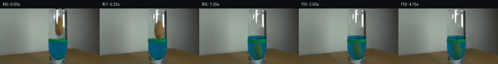

![首帧]()

Round 00
2026-11-05T15:55:52.937447+00:00像素候选变化代码 +338/−0inspection 更新
pixels e0bff23307d7efad · code 5c65322862abe7f2
查看本轮 generate.py 真实 diff
--- previous/generate.py
+++ current/generate.py
@@ -0,0 +1,338 @@
+"""Local pixel animation from the supplied first frame; no image/model/engine inputs."""
+from pathlib import Path
+import json
+import math
+import numpy as np
+import cv2
+from PIL import Image, ImageDraw
+from scipy.ndimage import gaussian_filter
+from artifact_io import save
+
+ROOT = Path(__file__).resolve().parent
+W, H = 256, 144
+DT = 0.0005
+TIMES = np.arange(20) / 4.0
+BASE = np.asarray(Image.open(ROOT / 'first_frame.png').convert('RGB'), dtype=np.float32)
+YY, XX = np.mgrid[:H, :W].astype(np.float32)
+RNG = np.random.default_rng(142)
+CX0, CY0 = 152.0, 45.5
+RELEASE = 0.18
+INITIAL_LEVEL = 79.0
+MAX_RISE = 7.3
+REST_CY = 104.5
+
+# Hand-measured silhouette; supersampling provides soft photographic boundaries.
+LEFT = np.array([[20,152],[21,150.5],[23,147.5],[26,145],[30,142.8],
+ [35,141.7],[43,141.1],[51,141.3],[56,142],[60,143],
+ [64,145.1],[67,147.9],[69,150.5],[70,152]])
+RIGHT = np.array([[20,154],[21,158],[23,161],[26,162.1],[33,162.2],
+ [42,162.3],[48,163.4],[53,164],[57,163],[61,161.7],
+ [65,159.6],[68,156.9],[70,152]])
+S = 4
+alpha_hi = np.zeros((H*S,W*S),np.uint8)
+ys = np.arange(20,70.01,.25)
+ls = np.interp(ys, LEFT[:,0], LEFT[:,1]); rs = np.interp(ys, RIGHT[:,0], RIGHT[:,1])
+poly = np.concatenate([np.stack([ls,ys],-1),np.stack([rs[::-1],ys[::-1]],-1)])
+cv2.fillPoly(alpha_hi,[np.rint(poly*S).astype(np.int32)],255)
+POTATO_ALPHA = cv2.resize(alpha_hi,(W,H),interpolation=cv2.INTER_AREA).astype(np.float32)/255
+POTATO_ALPHA = gaussian_filter(POTATO_ALPHA,.38)
+
+# A smooth local reconstruction between known empty-glass pixels replaces the
+# vacated potato. Source glass specular highlights are retained as a separate layer.
+CLEAN = BASE.copy()
+replacement = BASE.copy()
+for y in range(17,75):
+ left = np.median(BASE[y,131:137],axis=0)
+ right = np.median(BASE[y,165:168],axis=0)
+ # Exclude the original right-hand reflection from the far boundary sample.
+ if right.mean()>150:
+ right = np.median(BASE[y,166:168],axis=0)
+ u = np.clip((np.arange(W)-136.0)/31.0,0,1)
+ replacement[y] = left[None,:]*(1-u[:,None]**1.2)+right[None,:]*u[:,None]**1.2
+replacement += RNG.normal(0,.45,BASE.shape).astype(np.float32)
+remove = cv2.dilate((POTATO_ALPHA>.015).astype(np.uint8),np.ones((5,5),np.uint8)).astype(np.float32)
+# The soft shadow/edge under the original tip belongs to the moving object.
+remove = np.maximum(remove, np.exp(-((XX-152)/6)**2-((YY-69.5)/3.0)**2) * ((YY>66)&(YY<75)))
+remove = gaussian_filter(remove,.55)
+CLEAN = BASE*(1-remove[...,None])+replacement*remove[...,None]
+
+# Decompose the bright reflection stripes from the potato's intrinsic appearance.
+lum = BASE.mean(axis=2)
+reflection_roi = (((XX>=144)&(XX<=149)&(YY>=3)&(YY<=41)) |
+ ((XX>=160)&(XX<=165)&(YY>=12)&(YY<=50)))
+REF_ALPHA = np.clip((lum-154)/86,0,1)*reflection_roi
+# Keep the strongest highlight pixels precisely registered and unchanged.
+REF_ALPHA[lum>235] = np.where(reflection_roi[lum>235],1.,REF_ALPHA[lum>235])
+CLEAN = CLEAN*(1-REF_ALPHA[...,None])+BASE*REF_ALPHA[...,None]
+
+# Original grabber fragments at the image top are split and lifted offscreen.
+TOOL_ALPHA = np.zeros((H,W),np.float32)
+TOOL_ALPHA[:2,142:166] = 1
+TOOL_ALPHA[2,161:166] = .65
+TOOL_ALPHA = gaussian_filter(TOOL_ALPHA,.3)
+# The glass top behind the tool is reconstructed from the adjacent rim/background.
+for y in range(3):
+ for x in range(141,168):
+ u=(x-140)/28
+ bg=BASE[y,140]*(1-u)+BASE[y,168]*u
+ CLEAN[y,x] = CLEAN[y,x]*(1-TOOL_ALPHA[y,x])+bg*TOOL_ALPHA[y,x]
+
+# Reconstruct potato texture only where white glass highlights covered its body.
+TEXTURE = np.zeros_like(BASE)
+source_valid = (BASE[:,:,0]>BASE[:,:,1]*1.08)&(BASE[:,:,1]>BASE[:,:,2]*1.15)&(lum<166)&(POTATO_ALPHA>.25)
+for y in range(20,71):
+ l=np.interp(y,LEFT[:,0],LEFT[:,1]); r=np.interp(y,RIGHT[:,0],RIGHT[:,1])
+ radius=max((r-l)/2,1); center=(r+l)/2
+ good=np.where(source_valid[y])[0]
+ for c in range(3):
… diff truncated; 251 more lines …